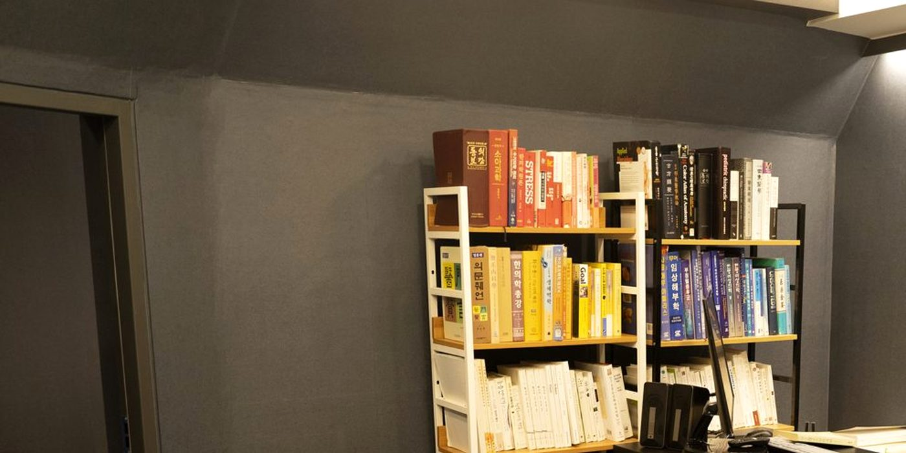

한 줄 답변
체형 검사는 서 있는 자세에서 어깨, 골반, 척추, 무릎의 균형을 살피고 족저 검사는 발바닥 체중 분포를 살펴, 통증의 이유를 가늠하는 참고 자료로 씁니다.
체형 검사는 서 있는 자세에서 어깨, 골반, 척추, 무릎의 균형을 살피고 족저 검사는 발바닥 체중 분포를 살펴, 통증의 이유를 가늠하는 참고 자료로 씁니다.
여쭙는 것
- 어느 부위가 언제부터 불편한가요?
- 한쪽 어깨가 처지거나 신발 굽이 한쪽만 닳는 편인가요?
- 오래 서 있거나 걸을 때 더 불편한가요?
한의원에서 함께 살필 것
- 몸의 균형이 한쪽으로 기운 것 같은 경우 자세와 발의 상태를 함께 살핍니다.
- 발바닥 통증이나 무릎 통증이 반복되는 경우 발과 하체의 연결을 함께 살핍니다.
- 체형이 걱정되는 경우 전체적인 몸의 균형을 함께 살핍니다.
먼저 확인이 필요한 신호
- 갑자기 한쪽 다리에 힘이 빠지거나 마비감이 오는 경우
- 밤에 쉬어도 통증이 심하고 열이 나는 경우
- 외상 뒤 변형이나 심한 붓기가 있는 경우
통증이 한 곳에만 있어도 몸의 균형이 영향을 주는 경우가 있습니다. 서 있는 자세와 발바닥 압력을 함께 살펴 통증 이유를 가늠하는 데 참고합니다.
먼저 이렇게 여쭙니다
- 어느 부위가 언제부터 불편한가요?
- 한쪽 어깨가 처지거나 신발 굽이 한쪽만 닳는 편인가요?
- 오래 서 있거나 걸을 때 더 불편한가요?
- 이전에 다친 적이 있나요?
무엇을 살피나요
- 앞뒤와 옆에서 본 어깨 높이, 골반 높이, 척추의 휘어진 정도
- 무릎과 발목의 정렬
- 발바닥에서 체중이 어디에 더 실리는지
- 걷거나 서 있을 때 한쪽으로 기울어지는지
한의원에서 함께 살필 수 있는 경우
- 몸의 균형이 한쪽으로 기운 것 같은 경우 자세와 발의 상태를 함께 살핍니다.
- 발바닥 통증이나 무릎 통증이 반복되는 경우 발과 하체의 연결을 함께 살핍니다.
- 체형이 걱정되는 경우 전체적인 몸의 균형을 함께 살핍니다.
진료실에서 이야기를 들은 뒤 어떤 방법이 맞을지 함께 정합니다.

이런 증상은 먼저 확인이 필요합니다
- 갑자기 한쪽 다리에 힘이 빠지거나 마비감이 오는 경우
- 밤에 쉬어도 통증이 심하고 열이 나는 경우
- 외상 뒤 변형이나 심한 붓기가 있는 경우
복용 중인 약은 처방한 의사와 상의 없이 줄이거나 끊지 않습니다.
자주 묻는 질문
검사만 받아도 되나요?
증상과 경과를 함께 묻는 것이 먼저이고 검사는 참고 자료입니다.
체형이 틀어져 있으면 모두 문제인가요?
대부분 약간씩 차이가 있어 통증이나 불편과 함께 보고 판단합니다.
깔창은 꼭 필요한가요?
필요 여부는 발의 상태와 불편에 따라 달라 상담 후 정합니다.
이 글은 일반적인 건강 정보이며 개인의 진단이나 치료를 대신하지 않습니다. 증상이 있거나 복용 중인 약이 있다면 진료를 통해 확인하세요. 치료 효과는 개인마다 다를 수 있습니다.
지난 이야기부터 이어서 묻습니다
좋은꿈참사랑한의원 노량진점은 재진 때 지난번 이야기부터 이어서 여쭙니다. 진료시간과 예약은 오시는 길에서 확인하세요.
좋은꿈참사랑한의원 노량진점은 재진 때 지난번 이야기부터 이어서 여쭙니다. 진료시간과 예약은 오시는 길에서 확인하세요.